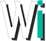
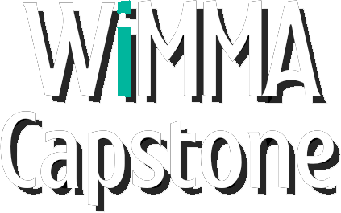

WI- ja WIMMA Capstone -logot
Suunnittelin WI-logon ja WIMMA Capstone -logon osana visuaalisen ilmeen kehittämistä. Työskentelin typografian, kontrastin ja tunnistettavan ilmeen parissa. Logot ovat esillä tässä portfoliossa, ja WIMMA Capstone -brändityötä hyödynnetään projektin verkkosivustolla.
Logo designTypographyVisual identity
Avaa logonäytteet

